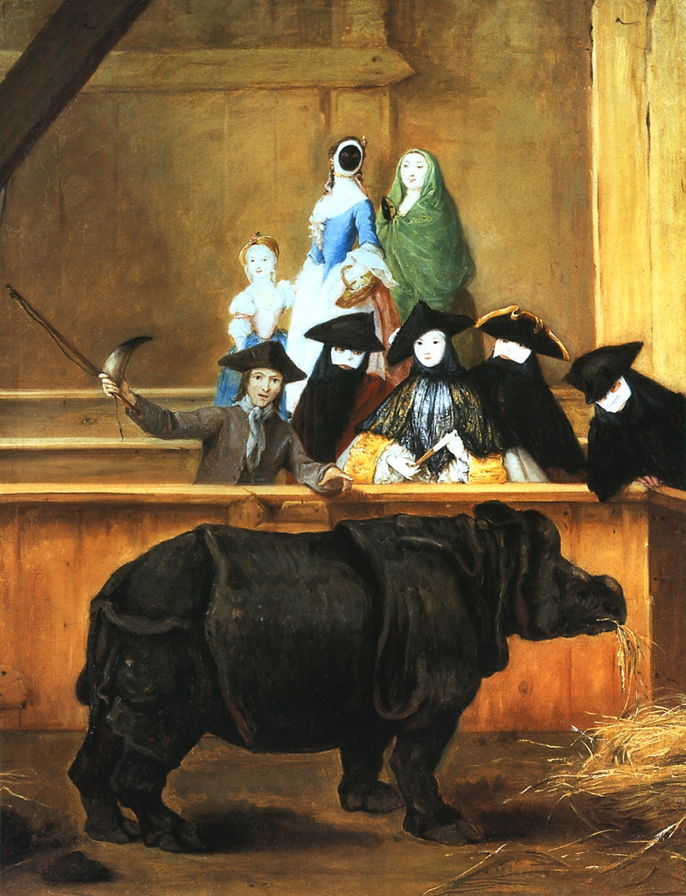

Носорог, изображенный с
большой точностью и почти
научной достоверностью, стоит в
загоне, безмятежно жуя сено, - экзотическое зрелище для
зачарованной публики в
карнавальных костюмах. Носорога,
представленного на этой
необычной картине, возили по
всем европейским столицам и в
1751 году показали в Венеции.
Небольшие картины Лонги из жизни
венецианского среднего класса
были театрализованы и
остроумны, но никогда не
сатиричны (в отличие, например,
от произведений англичанина
Уильяма Хогарта). Один из самых
очаровательных венецианских
живописцев XVIII века, хотя и
несколько наивный, Лонги
беспристрастно изображал
повседневные события,
поразившие его воображение.
Многочисленные ученики Лонги
повторяли его произведения,
другие художники подражали им, и
хотя все эти работы не обладают
высокими художественными
достоинствами, они являются
бесценным свидетельством о
венецианском обществе XVIII века,
давно миновавшем вершину
своего расцвета и приходящем в
упадок. Агасс, Хикс, Хогарт,
Тенирс.